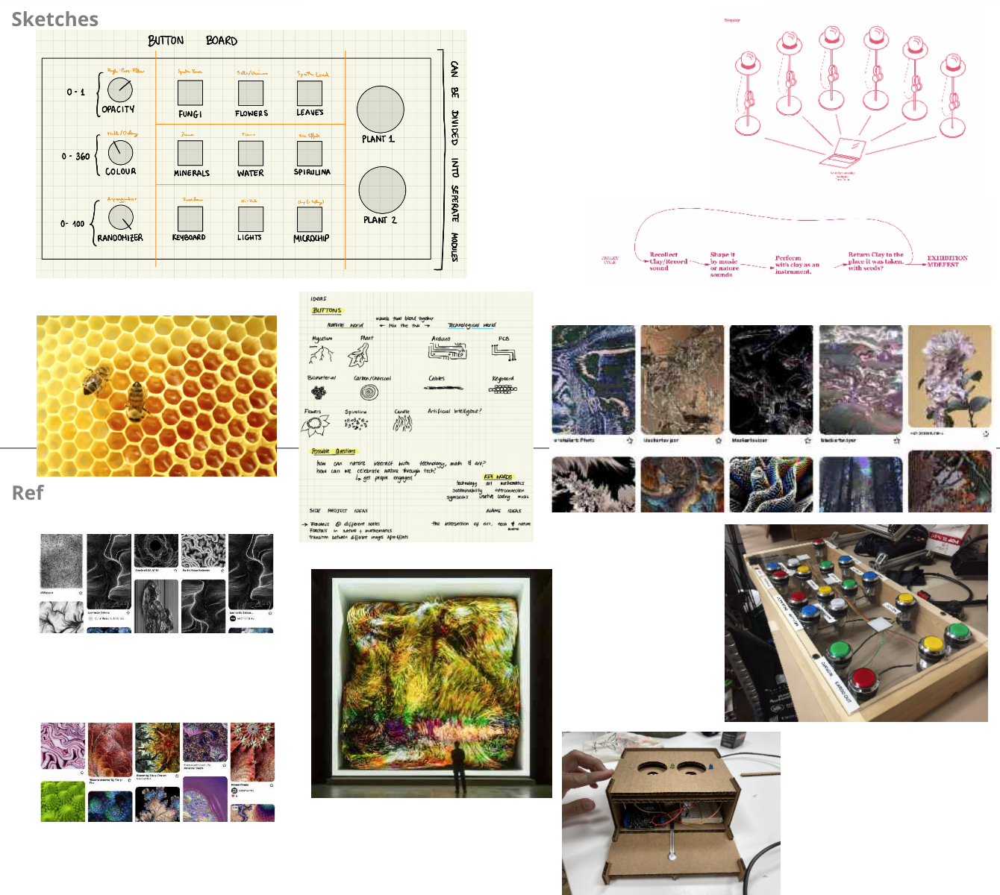
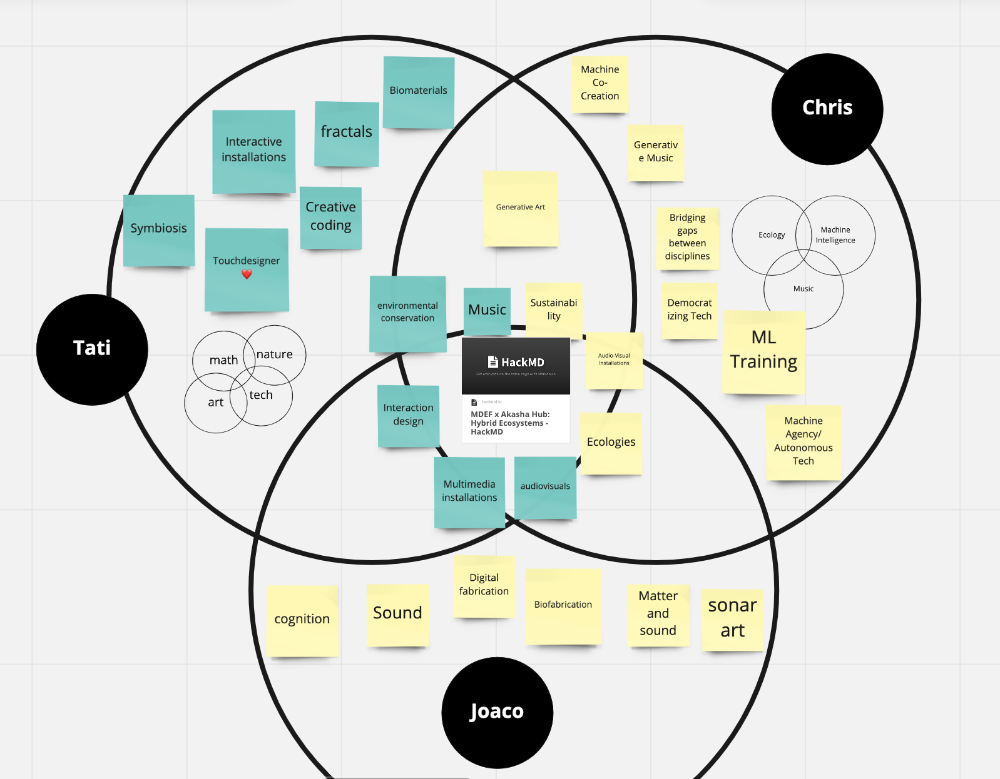

fabacademy challenges
Monthly Micro Challenges
Bio-based A/V button board
Find the full documentation here.
My group's goal of this last challenge was to prototype the control interfaces for our final installation at Akasha hub and to implement the software needed for the audiovisual projection. By doing this we confidently used many of the skills gained during the last months of Fab Challenge, as shown in the short video above.
We wanted to make a modular button input system. After initially thinking about producing some sort of playable MIDI keyboard, we thought it could be interesting to incorporate two of Akasha hub's values into the design: decentralisation & sustainable relationships. So we designed the possibility for distributed buttons (which could be placed together with magnets or farther away) and rethought the buttons' materiality by using biomaterials.

We were inspired by the structure a visual aspect of beehives, which is why we ended up going for the hexagonic shape.
My contribution to the project
We divided the group based on skills and interests. It's always important to balance the experimenting enough to be out-of-the-box, yet be rigorous with time and organisation in order to finish within the deadlines.
Juaco worked on the 3D printing, moulding & casting and soldering, Chris worked on the electronics, pcb milling and Ableton sountrack and I figured out how to structure the pipeline in Touchdesigner to receive, remap and send data through various protocols. We often teamed up and helped each other out on various tasks but generally, we can say that our biggest tasks were digital fabrication, biomaterial moulding, PCB milling, electronics, wireless communications, audio & visuals generation.
Project dissemination:
Easy to scale up: we already have the 3D files for a button, potentiometer and pressure sensor, so it is only a matter of repeating the 3D printing.
As for the audiovisual files, Touchdesigner is free for personal use and has a very active community, so we could post the file on TD forums for people to use and learn. Ableton, on the other hand is very not open source and expensive, so it wouldn't be easy to share that with people who do not have a license for it.
How this ties our individual research areas together

Our research areas are very similar, even though we hav different focal points. The common areas are music, sustainability, environmental awareness, multimedia installations, interaction design, ecologies and audiovisuals. Our individual niches and specialties are:
- Me: interactive installations, creative coding, symbiotic relationships, fractals, biomaterials and the one and only Touchdesigner
- Juaco: sound, digital fabrication, matter & sound, sonar art, biofabrication and cognition
- Chris: ML training, Autonomous tech, democratising tech, bridging gaps between disciplines, generative music.
We've liked working together because we manage to each find a way to reach a common objective (Audiovisual VJ set with biomaterials) without compromising our specific interests (bio fabrication, creative coding, generative music etc.).